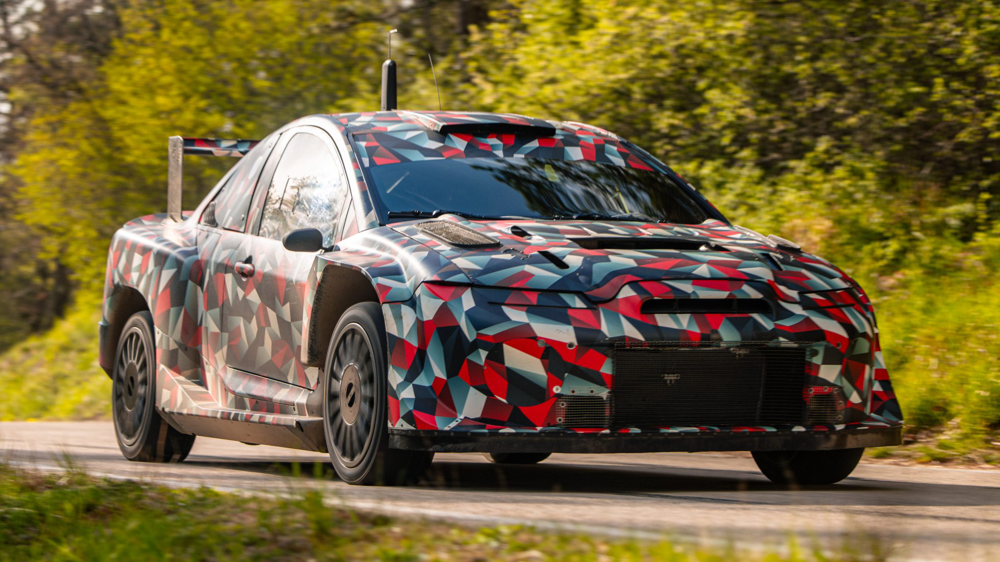

A marca correrá com suas duas divisões esportivas como equipe: a Toyota Racing (como é no WEC) com o GR Celica Rally1, e a Gazoo Racing com o GR Yaris Rally1.
The brand will field two of its racing divisions: Toyota Racing (as in WEC) with the GR Celica Rally1, and Gazoo Racing with the GR Yaris Rally1.